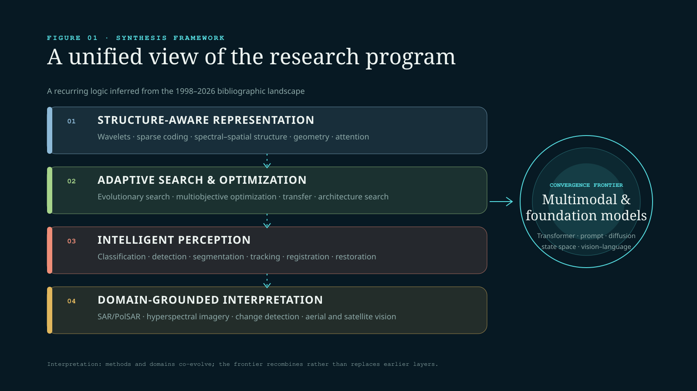
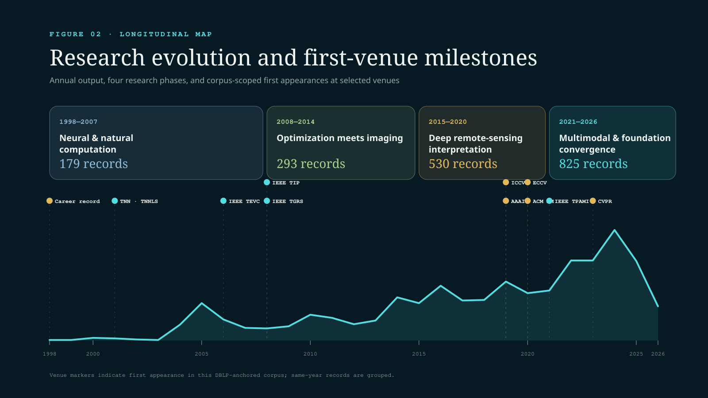
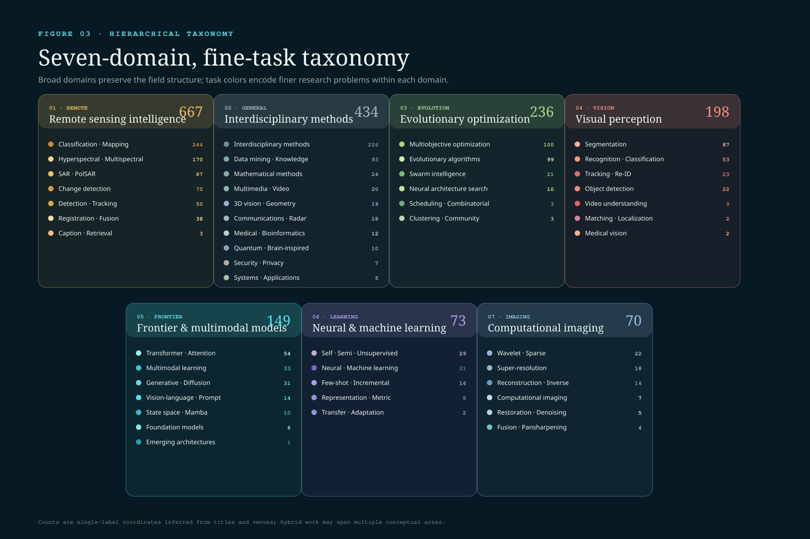
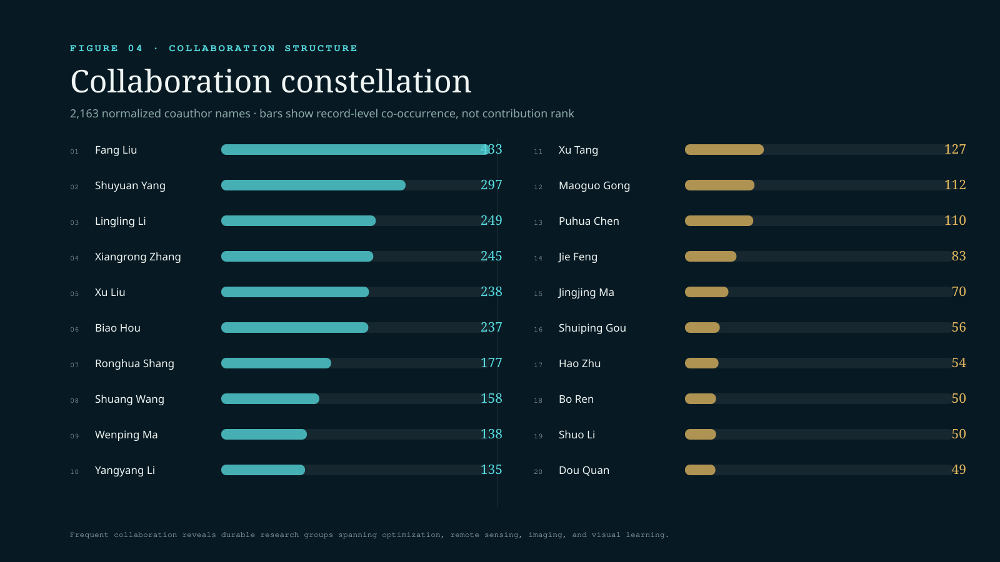
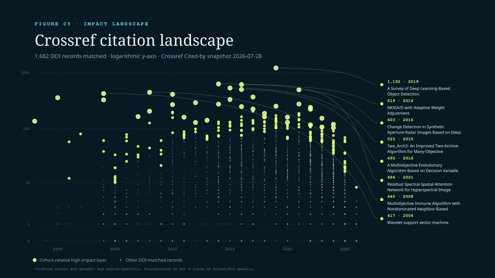

Abstract
This review maps 1,827 bibliographic records associated with Licheng Jiao from 1998 to 2026. It introduces a reproducible seven-domain, fine-task taxonomy; reconstructs four phases of research evolution; identifies corpus-scoped first appearances at selected journals and conferences; and analyzes collaboration and Crossref Cited-by evidence. The synthesis suggests a durable research logic connecting structure-aware representation, adaptive search, intelligent perception, and domain-grounded interpretation. Contemporary multimodal and foundation-model work is therefore interpreted as a recombination of earlier methodological commitments rather than an isolated turn. Evidence boundaries remain explicit: the current release is a bibliometric and title-level systematic mapping, not a substitute for source-verified full-text review.
01 / Framing and contributions
Reading a research career as an evolving system
A long publication list records outputs. A survey should explain the organizing ideas that connect them, how those ideas changed, and where the evidence remains incomplete.
Research programs that span several decades are often summarized through a handful of representative papers. That approach is readable, but it can hide continuity across methods, application domains, and generations of collaborators. This review instead treats the publication record as a longitudinal system. Its central question is how a program rooted in neural computation, evolutionary search, and multiscale signal analysis expanded into visual intelligence, remote-sensing interpretation, and contemporary multimodal models.
The presentation follows a systems-survey pattern: an overview figure defines the full research map; an explicit corpus protocol fixes the evidence boundary; a hierarchical taxonomy organizes detailed discussion; and cross-cutting synthesis reconnects themes that a single-label classification necessarily separates.
Reproducible corpus
DBLP identity anchoring, DOI linkage, public field allowlists, and versioned generation scripts make every count inspectable.
Hierarchical taxonomy
Seven broad domains and 48 observed tasks connect a large publication landscape without hiding the classification rules.
Longitudinal synthesis
Four phases and selected first-venue milestones show when methodological and institutional frontiers entered the corpus.
Relational evidence
Collaboration, venue, and Crossref citation layers complement topic counts and support questions for deeper full-text study.
02 / Corpus and protocol
A navigable corpus with visible evidence boundaries
The unit of analysis is a bibliographic record associated with DBLP
author profile 40/3714, not a deduplicated intellectual work.
Cross-database discovery and the Chinese-language gap
The 1,827-record corpus is the reproducible public baseline, not an estimate of every scholarly output. A user-supplied Scopus profile snapshot reports 2,564 documents, while a Baidu Scholar search reports approximately 3,983 results. Google Scholar currently provides no stable, reproducible total because access verification interrupts the query. These values cannot be added: they use different identity, document-type, and version policies.
Versioned public records with a strict field allowlist.
User-supplied document count; export and deduplication remain pending.
Search results may mix homonyms, versions, books, and theses.
No stable total is reported while verification blocks reproducible access.
Collection and inclusion
The corpus is anchored to a public DBLP identity and retains records carrying the associated author identity. DOI, DBLP key, publication type, year, venue, and public landing URL are normalized into a strict public schema. Records are included when they can be traced to the profile; local download state, private annotations, credentials, and machine paths are excluded from the public dataset.
Coding protocol
Ordered, human-readable keyword rules assign each title first to a broad domain and then to a fine-grained task. Rules are evaluated deterministically and kept with the site source. This favors auditability over opaque embedding clusters. A single label remains a compression: papers combining optimization, remote sensing, and multimodal learning may have several legitimate interpretations.
Measures and verification
Coauthor frequency is record-level co-occurrence after name normalization. Citation counts are retrieved by DOI from Crossref Cited-by. Selected first-venue milestones are the earliest matching year in this corpus. When several records share that first year, they are grouped rather than assigned a false within-conference chronology.
03 / Unifying framework
Four interacting layers, one convergence frontier
The corpus supports a four-layer reading of the research program. Structure-aware representation describes repeated attention to multiscale, sparse, spectral–spatial, geometric, and attentive representations. Adaptive search captures evolutionary, multiobjective, transfer, and architecture-level optimization. Intelligent perception includes classification, detection, segmentation, tracking, restoration, and matching. Finally, domain-grounded interpretation reflects sustained engagement with SAR, PolSAR, hyperspectral, aerial, and satellite data.
The layers are not historical stages. They interact across time: remote-sensing constraints motivate new representations; search procedures choose features and architectures; perception tasks provide evaluation settings; and modern multimodal systems recombine all four.

扫码查看原图
04 / Evolution and first-venue milestones
Four phases of accumulation and recombination
-
Neural and natural computation
Neural networks, evolutionary computation, clustering, wavelets, and early pattern recognition establish the methodological base.
-
Optimization meets imaging and remote sensing
Multiobjective optimization, sparse representation, image fusion, SAR, and remote-sensing classification become increasingly connected.
-
Deep remote-sensing interpretation
Deep visual learning expands across hyperspectral data, change detection, scene recognition, detection, segmentation, and multimodal fusion.
-
Multimodal and foundation-model convergence
Transformers, prompts, vision–language interaction, diffusion, Mamba, state-space models, and foundation-model adaptation recombine earlier themes.

扫码查看原图
Selected corpus-scoped firsts
Multi-Precision Quantized Neural Networks via Encoding Decomposition of {-1, +1}.
AFD-Net and Better and Faster: Exponential Loss for Image Patch Matching.
Supervised Edge Attention Network for Accurate Image Instance Segmentation.
A Novel Object Re-Track Framework for 3D Point Clouds.
Accelerated Variance Reduction Stochastic ADMM for Large-Scale Machine Learning.
Curvature-Balanced Feature Manifold Learning and an online self-training study for semantic segmentation.
| Year | Venue coordinate | First-year record |
|---|---|---|
| 1998 | Corpus start | Total least mean squares algorithm |
| 2001 | IEEE TNN / TNNLS | Multiwavelet neural network and its approximation properties |
| 2002 | Pattern Recognition | Linear programming support vector machines |
| 2005 | NeurIPS / NIPS | Response Analysis of Neuronal Population with Synaptic Depression |
| 2006 | IEEE TEVC | An organizational coevolutionary algorithm for classification |
| 2008 | IEEE TIP | Wavelet-Based Bayesian Image Estimation |
| 2008 | IEEE TGRS | Spectral Clustering Ensemble Applied to SAR Image Segmentation |
| 2019 | IJCAI | Accelerated Incremental Gradient Descent using Momentum Acceleration with Scaling Factor |
| 2023 | ICLR | Delving into Semantic Scale Imbalance |
05 / Domains and tasks
Seven domains, 48 observed research tasks
Remote-sensing interpretation is the largest single-label domain with 667 records. Interdisciplinary methods contribute 434, evolutionary optimization 236, visual perception 198, frontier models 149, neural learning 73, and computational imaging 70. The lower-level tasks reveal the internal structure hidden by these broad counts: remote sensing separates into classification, hyperspectral, SAR, change detection, detection, registration, and captioning; optimization separates into multiobjective search, general evolutionary algorithms, swarm intelligence, architecture search, clustering, and combinatorial problems.

扫码查看原图
Remote sensing
Scene and land-cover classification, hyperspectral and multispectral learning, SAR/PolSAR, change detection, detection, tracking, registration, fusion, and captioning.
Interdisciplinary methods
Communications, biomedical computing, data mining, mathematical methods, security, 3D geometry, multimedia, and emerging applications.
Evolutionary optimization
Multiobjective and many-objective optimization, evolutionary algorithms, swarm intelligence, architecture search, and combinatorial tasks.
Visual perception
Segmentation, recognition, tracking, re-identification, detection, video understanding, matching, localization, and medical vision.
Frontier models
Transformers, multimodal learning, diffusion and generative models, prompting, state-space models, and foundation models.
Neural learning
Self-, semi-, and unsupervised learning, few-shot and incremental learning, representation learning, and domain adaptation.
Computational imaging
Wavelets, contourlets, sparse representations, reconstruction, super-resolution, restoration, denoising, and fusion.
06 / Collaboration and venues
A dense, intergenerational collaboration structure
The corpus contains 2,163 normalized coauthor names. The highest record-level collaboration frequencies are Fang Liu (433), Shuyuan Yang (297), Lingling Li (249), Xiangrong Zhang (245), Xu Liu (238), Biao Hou (237), Ronghua Shang (177), Shuang Wang (158), Wenping Ma (138), and Yangyang Li (135). These values do not indicate contribution rank or seniority. They reveal durable publication relationships that connect optimization, remote sensing, imaging, and visual learning.

扫码查看原图
| Venue | Records |
|---|---|
| IEEE Transactions on Geoscience and Remote Sensing | 255 |
| CoRR | 125 |
| IGARSS | 104 |
| IEEE Journal of Selected Topics in Applied Earth Observations and Remote Sensing | 83 |
| IEEE Geoscience and Remote Sensing Letters | 71 |
| Remote Sensing | 69 |
| Neurocomputing | 66 |
| Pattern Recognition | 63 |
07 / Impact structure
High citation is a layer, not a definition of quality
Of 1,764 DOI-bearing records, 1,682 matched the Crossref Cited-by snapshot. Raw rankings strongly favor older work and remain sensitive to deposited-reference coverage. The Atlas therefore preserves raw counts while adding a publication-year cohort layer: top-decile records with at least five citations receive a high-impact treatment, while a stronger landmark treatment requires both the year-specific 99th percentile and at least 100 citations.

扫码查看原图
| Citations | Year | Record |
|---|---|---|
| 1,192 | 2019 | A Survey of Deep Learning-Based Object Detection |
| 619 | 2014 | MOEA/D with Adaptive Weight Adjustment |
| 603 | 2016 | Change Detection in Synthetic Aperture Radar Images Based on Deep Neural Networks |
| 523 | 2015 | Two_Arch2: An Improved Two-Archive Algorithm for Many-Objective Optimization |
| 493 | 2016 | A Multiobjective Evolutionary Algorithm Based on Decision Variable Analyses for Problems With Large-Scale Variables |
| 486 | 2021 | Residual Spectral-Spatial Attention Network for Hyperspectral Image Classification |
| 440 | 2008 | Multiobjective Immune Algorithm with Nondominated Neighbor-Based Selection |
| 417 | 2004 | Wavelet Support Vector Machine |
08 / Cross-cutting synthesis
Three recurring mechanisms connect the landscape
Structure-aware representation
Wavelets, sparse representations, spectral–spatial relations, geometric constraints, attention, and state-space models all encode structure rather than treating feature learning as undifferentiated.
Search, selection, and adaptation
Evolutionary search, multiobjective optimization, feature selection, transfer, prompting, and neural architecture search repeatedly ask how a solution process should adapt to a task.
Method–domain coevolution
Remote sensing is not merely an application destination. Its multiscale, multimodal, geometric, and physically grounded problems repeatedly motivate new representations and optimization formulations.
These mechanisms explain why the contemporary frontier is better read as convergence than replacement. Transformer, vision–language, diffusion, prompt, Mamba, and foundation-model papers appear inside a research environment already organized around structured signals, adaptive search, and demanding perception domains.
09 / Open agenda
Five questions for a deeper, full-text review
- How does domain structure enter modern foundation models?
A full-text study should trace whether spectral, spatial, geometric, and physical constraints are encoded through architecture, training objective, prompting, or data construction.
- Where does evolutionary search still create unique value?
The corpus suggests continuity from classical evolutionary computation to architecture search and adaptation. Method-level comparison is needed to separate inherited terminology from genuinely shared mechanisms.
- How do representations move across sensors and tasks?
Version-linked experiments could reveal when a representation developed for SAR, hyperspectral, change detection, or matching transfers to other modalities.
- Can impact be analyzed beyond raw citation counts?
Future releases should combine source-verified references, citation contexts, benchmark adoption, code availability, and field-normalized indicators.
- How does collaboration mediate research evolution?
Affiliation-aware and author-disambiguated analysis could test how methods, domains, and new venue frontiers travel across teams and generations.
10 / Limits and reproducibility
What this review can—and cannot—support
The current evidence base supports corpus mapping, descriptive bibliometrics, title-level thematic coding, collaboration counts, venue first appearances, and source-labeled citation analysis. It does not support claims about experimental results, causal influence, intellectual priority, or a paper’s technical contribution beyond verified metadata.
Conference, preprint, and journal versions may coexist. Author-name normalization cannot resolve every homonym. Crossref coverage is incomplete and dynamic. A deterministic one-label taxonomy can misclassify hybrid work. “First” means first appearance in the current DBLP-anchored dataset, not an absolute career claim.
Reproducibility assets include the public field allowlist, taxonomy rules, milestone generator, citation-refresh script, figure generator, QR assets, semantic HTML, LaTeX manuscript, and compiled PDF. The boundary can therefore be extended incrementally as verified abstracts, full texts, references, and affiliations become available.
11 / References and provenance
Primary data, survey design, and formatting guidance
- DBLP: Licheng Jiao bibliography.
- Crossref Cited-by documentation.
- Li et al.: Agent Harness Engineering — A Survey.
- Ren et al.: Self-Improvements in Modern Agentic Systems — A Survey.
- arXiv: HTML as an accessible format for papers.
- arXiv: LaTeX markup best practices for successful HTML papers.
- DBLP: Scope of the bibliography.
- Scopus: Author Profile FAQs.
- Google Scholar: Search help and coverage.